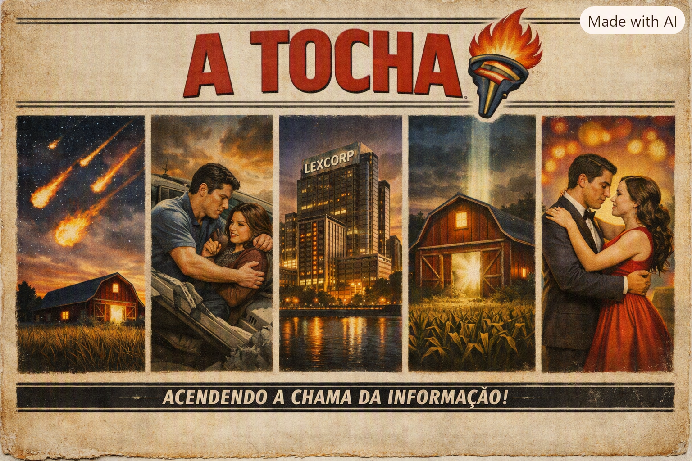
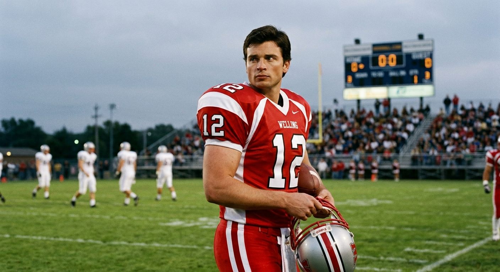

Uma escola tirada do Mural do Esquisito
Bem-vindo! Aqui você encontrará notícias e ficará por dentro de tudo que acontece na nossa escola.
Por: Beatriz

O jornal do colégio Smallville
Bem-vindo! Aqui você encontrará notícias e ficará por dentro de tudo que acontece na nossa escola.
Por: Beatriz

Com habilidades excepcionais, Kent foi escolhido como titular para o time dos Crows.
Por: Beatriz
